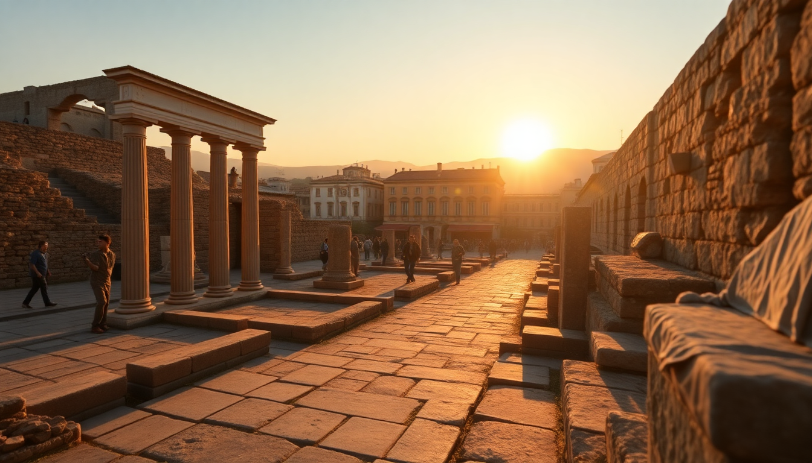

Best Day Trips from Naples: Pompeii, Capri & Amalfi

I spent a week based in Naples last spring, and honestly, the city itself could fill a month. But the real magic of this spot is how many world-class destinations sit within an hour or two. Pompeii, Capri, Sorrento, the Amalfi Coast — they all make perfect day trips if you plan the logistics right. Here’s exactly how to pull them off without wasting half your day in transit.
Is Pompeii doable as a half-day trip from Naples?
Yes, and honestly, that’s all you need unless you’re an archaeology buff. From Napoli Centrale, take the Circumvesuviana train (line toward Sorrento) — it’s cheap, frequent, and drops you right at Pompei Scavi-Villa dei Misteri station in about 35 minutes. The entrance to the ruins is a two-minute walk.
- Pompeii Archaeological Park — focus on the Forum, Amphitheatre, and Villa of the Mysteries. Skip the brothel; it’s a tiny room with a line around the block.
- Lunch tip: skip the overpriced cafeteria inside. Walk to Pizzeria da Franco on Via Sacra — it’s cash-only, no frills, and the margherita is €5.
- Ticket warning: buy online in advance from the official site to skip the 30-minute queue at the main entrance. They release tickets 30 days ahead.
- Time budget: arrive by 9 AM, leave by 1 PM. That gives you three solid hours inside and still leaves the afternoon for Naples itself.
I tried the audio guide once and found it dry. If you want context, grab a guidebook at the bookshop inside — way easier to skim.
How do I get to Capri and back in one day?
The ferry is your only option, and it’s simpler than most guides make it sound. From Molo Beverello port in Naples (a 15-minute walk from Piazza Municipio), ferries run year-round. The Caremar or NLG hydrofoils take 50 minutes and cost about €25 each way. Book a day or two ahead in summer — they sell out.
- Anacapri — go here first. Take the bus from Marina Grande up to Piazza Vittoria, then chairlift to Monte Solaro for the best view of the island. The chairlift is €12 round trip and runs until 3:30 PM.
- Capri town — skip the designer shops unless that’s your thing. Walk the Via Krupp path (closed for restoration as of 2024, but check current status) or just wander the narrow alleys.
- Blue Grotto — I’d skip it. The wait can hit two hours, and the rowboat operators rush you through in under five minutes. Instead, rent a small boat from Marina Grande for €50 per hour and see the grottos from outside.
- Lunch: Da Paolino in Capri town is famous for its lemon-tree courtyard, but it’s pricey. For a quick, good panino, try Il Grottino near the Piazzetta.
Return ferry: last one is usually 6:30 PM in summer, 5:00 PM in winter. Don’t miss it — overnight on Capri is beautiful but expensive.
What’s the best way to see Sorrento in a day?
Sorrento is the easiest day trip from Naples — the Circumvesuviana train runs every 30 minutes from Napoli Garibaldi and arrives at Sorrento station in about 70 minutes. The train can be crowded, especially in summer, so grab a seat early.
- Old Town — start at Piazza Tasso, then walk down Via San Cesareo for limoncello shops and ceramic stores. The side alleys are quieter and more charming.
- Marina Grande — a 15-minute walk downhill from the center. It’s a working fishing village with a few seafood spots. Ristorante da Emilia does a simple grilled octopus plate for €14.
- Viewpoint — the Cloister of San Francesco has a free terrace overlooking the Gulf of Naples. Go around sunset.
- Lemon groves — Il Giardino di Sorrento offers a 30-minute tour with limoncello tasting for €10. Book same-day at the desk near Piazza Tasso.
I found Sorrento a bit touristy in the main square, but the side streets and marina feel genuine. If you’re short on time, skip the Villa Comunale park — it’s nice but not worth the detour.
Can you visit the Amalfi Coast as a day trip from Naples?
Technically yes, but I’d pick one town. The coast road is narrow, winding, and prone to traffic jams. Trying to hit Amalfi, Positano, and Ravello in one day will leave you stressed and rushed. Focus on Amalfi town — it has the best transport links.
- From Naples: take the high-speed Trenitalia train from Napoli Centrale to Salerno (35 minutes, €10-15), then the SITA bus from Salerno bus station to Amalfi (50 minutes, €3.80). Bus tickets must be bought at the tabacchi shop inside the station.
- Amalfi Cathedral — the entrance fee is €3, and the cloister is the highlight. The main square below is always busy, but the cathedral itself is quiet.
- Lunch: Trattoria da Gemma on Via Fra Gerardo Sasso — the lemon risotto is the best I’ve had on the coast. Reservations recommended in summer.
- Positano — if you must see it, take the ferry from Amalfi (20 minutes, €10). The view from the beach is iconic, but the town is steep and packed. I’d skip it unless you have a second day.
- Return: last bus from Amalfi to Salerno is around 8 PM. The last train from Salerno to Naples is about 10 PM.
One warning: in July and August, the SITA buses run late due to traffic. If you miss the last bus, you’re stuck with a €100 taxi ride.
What about the islands of Ischia or Procida?
Ischia is big — too big for a relaxed day trip. Procida, though, is perfect. It’s smaller, quieter, and feels like Capri without the crowds. Ferries from Molo Beverello take about 40 minutes and cost €20 round trip.
- Procida — walk from the port to Terra Murata, the old fortified village. The view from the Palazzo d’Avalos terrace is free and stunning.
- Marina Corricella — a colorful fishing harbor with a few seafood joints. La Lampara serves a great spaghetti alle vongole for €12.
- Beach — Spiaggia di Chiaia is the only sandy beach. It’s small and gets crowded, but the water is clear.
- Time budget: arrive by 9:30 AM, tour the island by foot in 3-4 hours, have lunch at 1 PM, and catch the 4 PM ferry back.
I’d choose Procida over Ischia for a day trip every time. Ischia deserves a weekend.
Which day trip is best for first-timers?
Pompeii. It’s the easiest logistically, cheapest, and most impressive. You don’t need a car, a guide, or a reservation for the train. Plus, it leaves you back in Naples by lunchtime to explore the historic center or eat pizza at L’Antica Pizzeria da Michele (cash only, €5 for a margherita, expect a 30-minute line).
If you have a second day, do Sorrento. It’s nearly as easy as Pompeii but offers a completely different vibe — coastal, relaxed, and full of limoncello.
FAQ
Is the Amalfi Coast worth visiting in winter? Yes, but only on a clear day. From November to March, many restaurants and hotels close, and the SITA bus runs a reduced schedule. The upside: no crowds, cheaper ferries, and you can actually walk through Amalfi’s cathedral without elbowing anyone. Just check the weather forecast — rain makes the coastal road slippery and less enjoyable.
Do I need to book train tickets in advance for these trips? For the Circumvesuviana (Pompeii, Sorrento), no — it’s a commuter train with no seat reservations. Just buy a ticket at the machine or tabacchi. For high-speed Trenitalia trains to Salerno (Amalfi Coast access), yes — book online at least a day ahead to get the cheaper “Base” fare. Same-day tickets cost double.
What’s the best way to avoid crowds at Pompeii? Arrive at the entrance by 8:30 AM, before the tour buses roll in from Rome at 10 AM. Also, skip the main entrance (Porta Marina) and use the Piazza Anfiteatro entrance instead — it’s smaller, less busy, and puts you near the amphitheatre first. Buy your ticket online the night before.
Conclusion
- Pompeii is the easiest and best-value day trip — cheap train, half-day schedule, and world-class ruins.
- Capri works in one day if you skip the Blue Grotto and focus on Anacapri and the chairlift.
- Sorrento is the most relaxed option — walkable, good food, and easy train access.
- Amalfi town is the only Amalfi Coast destination I’d attempt as a day trip from Naples, and only via Salerno.
- Procida beats Ischia for a quick island escape — less travel time, more charm.